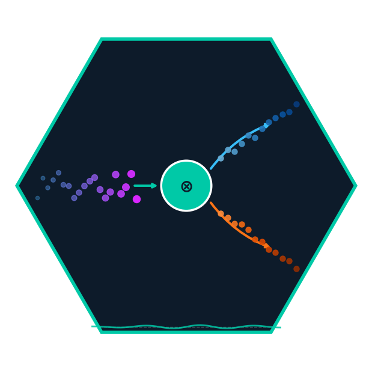
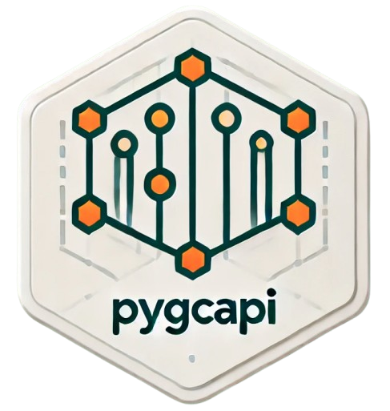
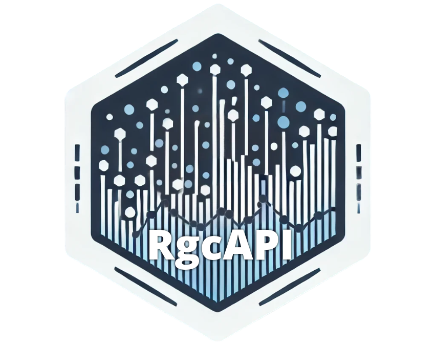
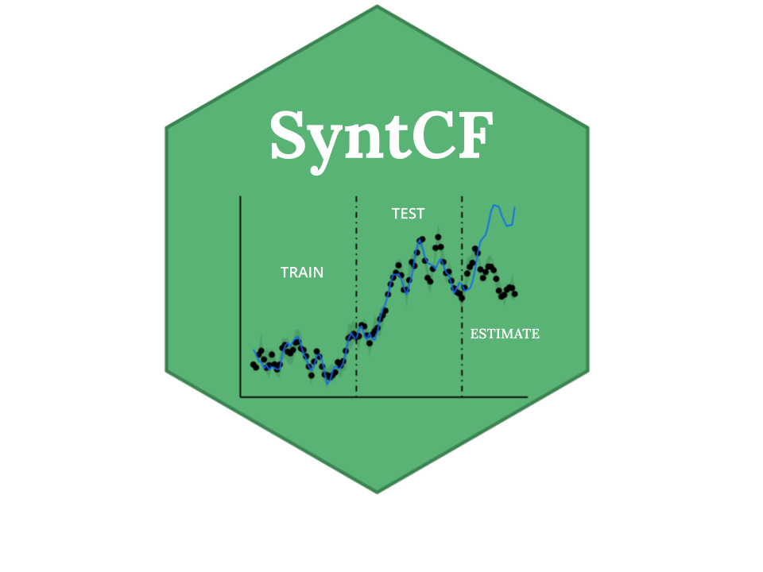
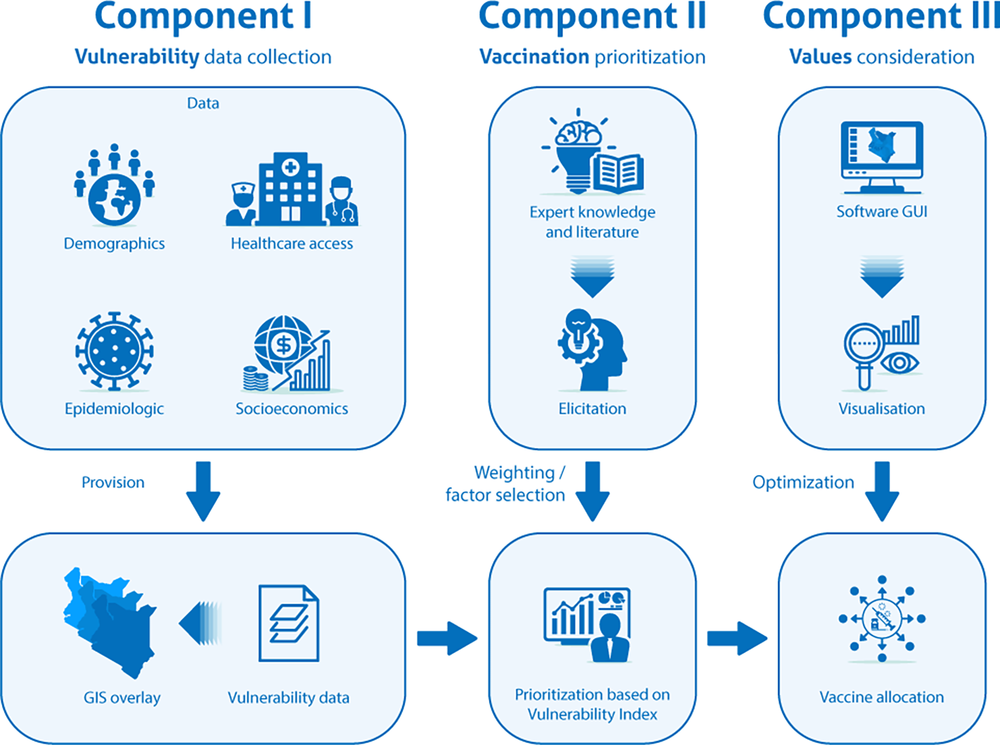

onlinecml

OnlineCML is an open-source Python library for online causal machine learning — causal inference one observation at a time. Every major causal inference library (EconML, CausalML, DoWhy) requires a complete dataset before you begin. OnlineCML is built for the real world: A/B tests where you want decisions now, clinical trials where treatment effects must be monitored continuously, and marketing systems where customer data arrives as a stream.
It implements a full suite of online estimators — IPW, Augmented IPW, Overlap Weights, S/T/X/R-Learners, Online Matching, and novel Online Causal Forest and Causal Hoeffding Tree with a custom causal split criterion that maximises between-child CATE variance rather than outcome MSE. Built-in exploration policies (Epsilon-Greedy, Thompson Sampling, UCB) and diagnostics (ADWIN drift detection, SMD balance checks, ATE convergence tracking) make it suitable for live experimentation pipelines where the treatment effect might shift over time.
argenta
Argenta is an open-source Python library for warehouse-native causal ML experimentation. Most A/B testing tools stop at “did it work?” — Argenta answers for whom, why, and what to do next.  It connects directly to your existing data warehouse (Snowflake, BigQuery, or Redshift), executes a fully auditable SQL pipeline inside it to construct a clean experiment dataset, and then applies causal machine learning methods — including Double Machine Learning via Causal Forest (CausalForestDML) and CUPED variance reduction — to produce results that traditional experimentation platforms don’t offer: heterogeneous treatment effects (HTE), per-user Conditional Average Treatment Effect (CATE) scores, automatic subgroup discovery, and uplift-based targeting recommendations.
It connects directly to your existing data warehouse (Snowflake, BigQuery, or Redshift), executes a fully auditable SQL pipeline inside it to construct a clean experiment dataset, and then applies causal machine learning methods — including Double Machine Learning via Causal Forest (CausalForestDML) and CUPED variance reduction — to produce results that traditional experimentation platforms don’t offer: heterogeneous treatment effects (HTE), per-user Conditional Average Treatment Effect (CATE) scores, automatic subgroup discovery, and uplift-based targeting recommendations.
Argenta is analytics-only: it works with experiments you’ve already run, regardless of which platform assigned variants. Your data never leaves your warehouse. Results are written back to a schema you control.
Built with a config-first design (Pydantic v2 + YAML), Jinja2-rendered SQL templates for dialect-aware warehouse execution, and a pure pandas/scipy statistics layer that is fully unit-testable without a live connection.
R-Genius
R-Genius is your ultimate companion for everything in R. From advanced machine learning algorithms to econometrics, time series forecasting, sophisticated data manipulation, interactive dashboard creation, and package development—R-Genius has you covered. Whether you’re analyzing data, building applications, or exploring statistical models, R-Genius delivers precise and intelligent assistance tailored to your needs. Empower your R workflows like never before.
Comprehensive Expertise R-Genius: integrates advanced machine learning algorithms, cutting-edge econometric models, and time-series forecasting techniques within the R environment. Instead of juggling multiple resources, you can find guidance on these tasks in one place.
Intelligent Code Suggestions: Tired of sifting through documentation or forgetting function arguments? R-Genius provides context-aware suggestions, ensuring you’re always just one prompt away from the right code snippet or function call.
Faster Insights and Iterations: By shortening the learning curve and offering immediate, intelligent feedback, R-Genius helps you build and refine your workflows more efficiently. Spend more time interpreting results and less time wrestling with syntax and package incompatibilities.
Tailored Solutions for Your Use Case: Whether you’re working on advanced predictive modeling, exploratory data analysis, or building robust Shiny dashboards, R-Genius adapts to your needs—offering solutions as unique as your projects.
pygcapi

The pygcapi Python package provides an interface to the Gain Capital API V1 and V2, enabling users to perform various trading operations on Forex.com. This package includes functionalities for account management, market information retrieval, trading operations, and historical data extraction. It also includes helper functions and lookup tables to facilitate the interpretation of API responses. This makes it an indispensable tool for the automated management of trading accounts and the implementation of automated trading strategies.
pygcapi is the sister library of the rgcapi package, the only library within the R ecosystem that facilitates connectivity with the Gain Capital API. pygcapi offers a robust solution for traders and data scientists seeking to enhance their trading operations.
PBOX

The pbox R package is designed for risk assessment and management. It is an advanced statistical library that excels in exploring probability distributions within a given dataset. The tool offers a method to encapsulate and query the probability space effortlessly. Its distinctive feature lies in the ease with which users can navigate and analyze marginal, joint, and conditional probabilities while taking into account the underlying correlation structure inherent in the data. This unique capability empowers users to delve into intricate relationships and dependencies within datasets, providing a solid foundation for making well-informed decisions in the context of risk management scenarios. With pbox is straightforward to answer questions like:
What is the probability of experiencing extreme heat waves in Indonesia with temperatures above 32 degrees?
What is the probability of simultaneous extreme heat waves in Vietnam with temperatures above than 31 degrees and the average regional temperature being above than 26 degrees?
Given that the average regional temperature is 26 degrees, what is the probability of experiencing extreme heat waves in both Vietnam and Indonesia with temperatures above 33 degrees?
rgcapi

The rgcapi R package provides an interface to the Gain Capital API V1 and V2, enabling users to perform various trading operations on Forex.com. This package includes functionalities for account management, market information retrieval, trading operations, and historical data extraction. It also includes helper functions and lookup tables to facilitate the interpretation of API responses. The library is implemented using R6, an encapsulated object-oriented programming paradigm in R, which offers advantages such as modularity, reusability, and the ability to maintain state across function calls.
Notably, the rgcapi package is the only library within the R ecosystem that facilitates connectivity with the Gain Capital API. This makes it an indispensable tool for the automated management of trading accounts and the implementation of automated trading strategies. By leveraging the extensive statistical, data science, and machine learning capabilities of the R ecosystem, rgcapi offers a robust solution for traders and data scientists seeking to enhance their trading operations.
SyntCF

The syntCF R package is a powerful tool designed for estimating the impact of programs or policies through a robust time series synthetic counterfactual approach, leveraging the double difference estimator within a Machine Learning framework. Inspired by contributions from various studies, the package employs a modified version of the robust random forest algorithm, considering the time dependency of data through block bootstrapping. To address uncertainty in predicted counterfactual time series, quantile regression forest is used.
An AI Geospatial-assisted decision support framework

3Vs (Vulnerability, Vaccination, and Values), is a framework devised to optimize the allocation of COVID-19 vaccines in settings characterized by resource constraints. The framework integrates processes of data collection, AI-facilitated vulnerability assessment, and vaccination prioritization, all aligned with the principles delineated by the World Health Organization (WHO). Noteworthy components encompass the compilation of socio-demographic and environmental data, AI-driven expert elicitation for prioritization, and geospatially informed vaccine allocation with due regard to equity values. The framework’s empirical application in Kenya serves as a testament to its potential to surpass prevailing strategies, demonstrating adeptness in the judicious dispensation of vaccines to socially vulnerable demographics. Adaptable to diverse health emergencies, the 3Vs framework emerges as an invaluable instrument for decision-makers navigating challenges within resource-constrained environments.